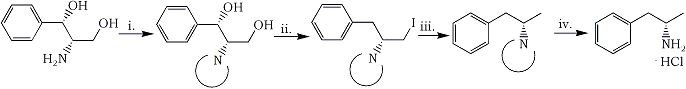

Abstract
Optically active (S)-(+)-amphetamine hydrochloride (5�HCl) was prepared from (1S,2S)-2-amino-1-phenyl-1,3-propanediol (1) via its 3-iodo intermediate (3). A phthaloyl group was used for protecting the amine function.
2-Amino-1-aryl-1,3-propanediols are the key intermediates in the synthesis of chloramphenicol-type antibiotics. Only the (1R,2R) isomers are biologically active, while their (1S,2S) enantiomers are devoid of such activity. In contrast to the recently reported enantioselective synthesis of chloramphenicol1, the industrial syntheses of the aminodiols involve an optical resolution of racemic intermediate supplying both enantiomers with equal chemical and optical purity. Attempts at utilizing the undesired stereoisomers have been made in many laboratories, resulting in a variety of interesting applications as well as chemical transformations. From a practical point of view, a conversion of the inactive (1S,2S) enantiomers into the active (1R,2R) ones is an important problem. As yet, it has been solved by applying two strategies. One of them involves a racemization2,3, which again necessitates a resolution, the other one deals with a stereoselective transformation of one enantiomer into the other without racemization4. An example of inversion of configuration at only one stereogenic center was also described5. As optically active amines, both enantiomers of 2-amino-1-aryl-1,3-propanediols have been used as resolving agents for the optical resolution of racemic organic acids6-8. They have also found broad application as a chiral auxiliary in asymmetric synthesis, e.g. in Strecker aminoacids synthesis9,10, Michael addition11,12, reduction13, C-alkylation14,15 and in the famous Meyers� oxazoline chemistry16. There are also reports on asymmetric reactions mediated by these aminodiols used as chelating ligands or catalysts17-19. They serve as chiral starting material in the synthesis of various optically active molecules. Apart from the above mentioned oxazolines18,20,21 other heterocycles20-23as well as important aminoalcohols: (S,S)-norpseudoephedrine24,25 and (R)-phenylalaninol26 have been prepared.
In this paper we report an efficient method for converting (S,S)-2-amino-1-phenyl-1,3-propanediol (1) into homochiral (S)-(+)-amphetamine (5). The sequence of synthetic transformations is shown in Scheme 1.
Scheme 1
i. Phthalic anhydride ii. PPh3, I2, toluene iii. H2/Pd-C, Et3N, ethyl acetate iv. NH2NH2·H2O, n-butanol
In order to realize the outlined strategy, selection of a proper amine protecting group was essential. As followed from our experience and was proven by others24-28, the phthaloyl group proved to be superior to acyl or alkoxycarbonyl ones. Thus, treatment of 1 with freshly sublimed phthalic anhydride at 160�C under atmospheric pressure resulted in N-phthaloyl deriv 2 (88%), which crystallized persistently with 1/3 of a molecule of water of crystallization, melting at 180-180.5�C and showing [α]D20 +40.6, while the corresponding data reported27 for anhydrous 2 were 164-168°C, [α]D20 +41.1, respectively. In the next step the bstitution of both hydroxyl groups by hydrogen via the corresponding diiodo intermediate as planned. The well known triphenylphosphine/iodine/imidazole in boiling toluene system seemed to be the reagent of choice for direct replacement of hydroxyls by iodine. When the reaction was run in the absence of imidazole, however, the monoiodide 3 was obtained in 86% yield (mp 141-142°C). Apparently it results from a diiodo intermediate in which the benzylic iodine was reduced by hydriodide formed as a by-product in this process29. The reductive dehalogenation of iodide 3 with hydrogen under pressure (1.5 atmosphere) in the presence of 10% Pd/C and triethylamine afforded N-phthaloylamphetamine (4) in 94% yield mp 78-79�C. The N-phthaloyl protecting group was then removed by hydrazinolysis in boiling n-butanol. As a result, (S)-(+)-amphetamine hydrochloride (5·HCl) was obtained in 61% yield (mp 156.5-158.5°C). The physical data of so prepared 5·HCl are identical, within experimental error, with those reported In the literature for a sample prepared from racemic amphetamine by chemical resolution with D-tartaric acid (mp 156°C, Amphetamine hydrochloride (5·HCl) turned out to be difficult to handle when anhydrous. It was characterized by 1H- and 13C-NMR spectra.
This short and efficient synthesis of (S)-(+)-amphetamine (5) from (1S,2S)-2-amino-1-phenyl-1,3-propanediol (1) in 44% overall yield demonstrates another possibility of making use of the waste isomers formed in the production of chloramphenicol antibiotics.
Experimental
General
Melting points: determined on a Koffler block. IR spectra: Pekrin-Elmer 180 in KBr pellets. 1H NMR and 13C NMR spectra: Varian Gemini 300, TMS as internal standard. Mass spectra, chemical ionization: Finnigan 10150. Specific rotation: Perkin Elmer Polarimeter 2438. Macherey-Nagel silica gel 60 (200-300 mesh) was used for column chromatography and Merck DC-Alufolien Kieselgel 60 F254 for TLC. (1S,2S)-2-amino-1-phenyl-1,3-propanediol was purchased from Fluka AG.
(1S,2S)-1-Phenyl-2-phthalimido-1,3-propanediol (2)
(1S,2S)-2-amino-1-phenyl-1,3-propanediol (1) (3.34 g, 20 mmol) and phthalic anhydride (2.96 g, 20 mmol) were melted together at 160�C and stirred for few minutes until the mixture turned into a solid. After cooling it was dissolved in hot methanol and left for crystallization. The crystals were filtered off to give 5.22 g (88%) of 2, mp 180-180.5�C (lit.27164-168�C)
(R)-3-Iodo-1-phenyl-2-phthalimidopropane (3)
To a refluxing solution of compound 2 (1.48 g, 5 mmol) and triphenylphosphine (3.41 g, 13 mmol) in toluene (25 ml), iodine (3.30 g, 13 mmol) was added portionwise. The mixture was heated at reflux for 1 h, then anhydrous ethanol (0.5 ml) was added in two portions at ca. 1/2 h intervals. The mixture was then cooled to R.T., decanted and the residue was washed with toluene (2x20 ml). The combined organic extracts were washed with saturated Na2S2O3 sol., then with water, dried and the solvent was evaporated. The oily residue, dissolved in methanol, deposited crystalline 3 in 86% yield, mp 141-142�C.
(S)-N-Phthaloylamphetamine (4)
A solution of compound 3 (1.13 g, 2.97 mmol) in ethyl acetate (45 ml) in the presence of triethylamine (1.88 ml) and 10% Pd/C catalyst (226 mg) was hydrogenated under the pressure of 1.5 atmosphere of hydrogen for 20 h. The catalyst was then filtered off and the filtrate was washed with 5% aqueous hydrochloric acid. The organic phase was dried and the solvent was evaporated to give 0.72 g (94%) of crystalline residue, which after crystallization from ether/hexane showed mp 78-79°C (lit.32 mp 78-78.5°C)
(S)-(+)-Amphetamine hydrochloride (5·HCl)
N-Phthaloylamphetamine (4) (0.94 g, 3.55 mmol) in n-butanol (50 ml) and 80% aqueous hydrazine (1 ml) were heated at reflux for 2 h. The mixture was left at R.T. for 18 h and then the precipitate was filtered off and washed with n-butanol (10 ml). After addition of 6N hydrochloric acid (2.5 ml) the filtrate was concentrated to half of its volume, the precipitate was filtered off and the filtrate concentrated again. It yielded a solid which was recrystallized from ethanol/ethyl ether to give 0.31 g (61%) of pure (S)-(+)-amphetamine hydrochloride (5�HCl), mp 156.5-158.5�C (lit.30 mp 156�C)